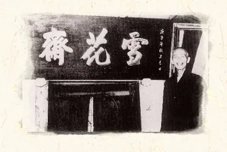

店家特色
老雪花齋是擁有百年歷史的糕餅店，創立於1900年，至今已傳承至第三代。店內以傳統糕餅為主，其中又以綠豆椪作為最具代表性的產品，長年累積下來已成為品牌的核心特色。雖然產品看似傳統，但店家其實很重視如何讓古早味被現代人接受，因為不只是味道本身，還包含呈現方式與市場溝通。也因此在經營上，除了維持原有風味，還會透過不同方式推廣產品，讓老味道能持續被看見與記住。
｜一口綠豆椪，一段百年故事｜
老雪花齋是擁有百年歷史的糕餅店，創立於1900年，至今已傳承至第三代。店內以傳統糕餅為主，其中又以綠豆椪作為最具代表性的產品，長年累積下來已成為品牌的核心特色。雖然產品看似傳統，但店家其實很重視如何讓古早味被現代人接受，因為不只是味道本身，還包含呈現方式與市場溝通。也因此在經營上，除了維持原有風味，還會透過不同方式推廣產品，讓老味道能持續被看見與記住。


呂水（雪花齋創始人）